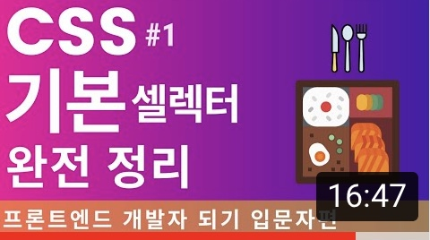
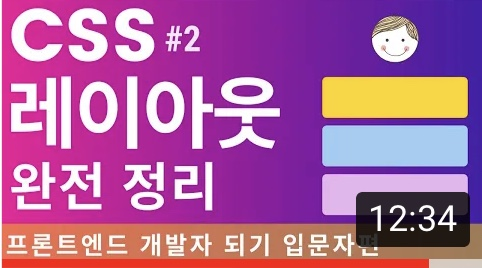
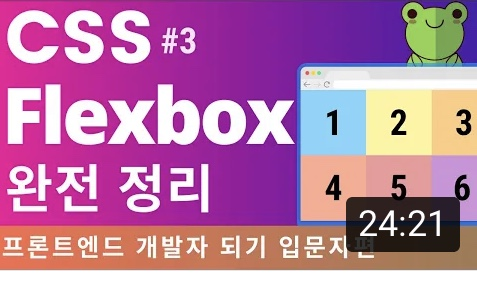

-

CSS 셀렉터, 기초 이론 정리. 포트폴리오 만드는 날까지! 프론트엔드 개발자 입문편:HTML, CSS, Javascript
드림코딩 by 엘리
70K views
-

CSS 레이아웃 정리 display, position 완성/ 프론트엔드 개발자 입문편:HTML, CSS, Javascript
드림코딩 by 엘리
82K views
-

CSS Flexbox 완전 정리. 포트폴리오 만드는 날까지!/ 프론트엔드 개발자 입문편:HTML, CSS, Javascript
드림코딩 by 엘리
69K views